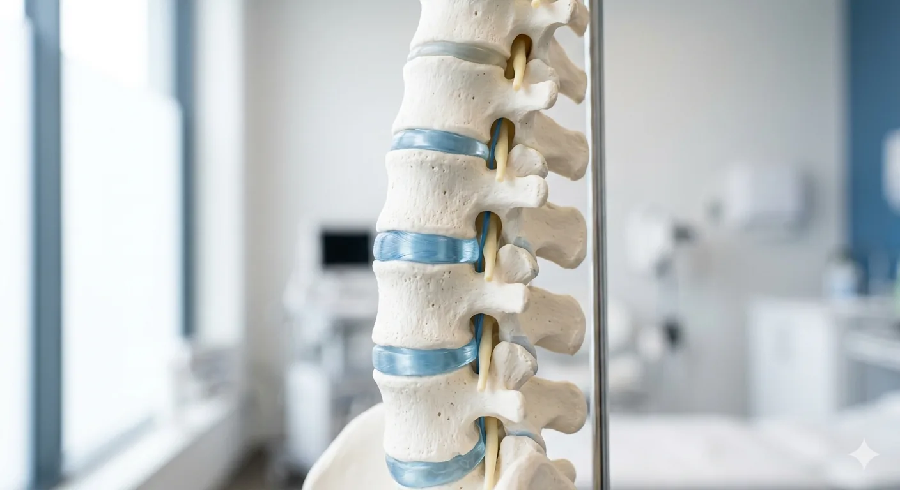

Ihre Praxis für Orthopädie in Mölln.
Ob Gelenke, Wirbelsäule oder Muskulatur: wir diagnostizieren und behandeln mit konservativer Orthopädie, Chirotherapie und modernen Verfahren.

Facharzt für Orthopädie, Akupunktur und Chirotherapie.
Über 20 Jahre Erfahrung in Mölln.
Was wir für Sie tun.
Drei Schwerpunkte: von akuter Hilfe über klare Diagnostik bis zu modernen, schonenden Verfahren.

Akute Schmerztherapie
Schnelle Hilfe bei plötzlichen Beschwerden, meist innerhalb von 24–48 Std.
- Akutsprechstunde
Reservierte Slots für neu aufgetretene starke Schmerzen. Bitte telefonisch melden.
- Rücken- & Wirbelsäulenschmerzen
Bandscheibe, Ischias, Hexenschuss, Blockaden. Konservative Erstbehandlung in einer Sitzung.
- Knie- & Schulterschmerzen
Schmerzdiagnose, Punktion, Infiltration sowie Kortison- oder Hyalurontherapie nach Bedarf.
- Sportverletzungen
Bänder, Sehnen, Muskelfaserrisse. Erstversorgung, Tape, Stoßwelle, Rückkehr-zum-Sport-Plan.
- Manuelle Therapie & Chirotherapie
Sanftes Lösen von Blockaden an Wirbelsäule und Gelenken. Ohne Knacken, wenn gewünscht.
Diagnostik & Bildgebung
Klare Antworten direkt vor Ort — digital und schnell.
- Digitales Röntgen
Strahlungsarme Aufnahmen in der Praxis.
- Ganganalyse & Haltungsdiagnostik
Für Beschwerden an Knie, Hüfte und Rücken, inkl. Einlagen-Empfehlung.
- OP-Beratung & Zweitmeinung
Zweite Meinung vor geplanten orthopädischen Eingriffen.
Spezielle Verfahren
Moderne konservative Methoden, wenn Standardtherapie nicht reicht.
- Stoßwellentherapie
Fersensporn, Tennisellbogen, chronische Sehnenreizungen. Meist 3–5 Sitzungen.
- Hyaluronsäure-Behandlung
Bei Arthrose im Knie oder an der Schulter. Schmerzlinderung über Monate.
- Akupunktur (Körper & Ohr)
Anerkannte Schmerzakupunktur bei chronischen Rücken- und Knieschmerzen.
Akute Beschwerden? Wir haben reservierte Slots in der Akutsprechstunde.
04542 6026 anrufenOrthopädie in Mölln. Seit 2003.
Liebe Patientin, lieber Patient, ich freue mich, Sie in meiner Praxis in Mölln zu sehen. Bei akuten Schmerzen an Gelenken, Wirbelsäule oder Muskulatur helfe ich Ihnen und nehme mir die Zeit, die nötig ist, um zur richtigen Behandlung zu kommen.
Klaus Fink
Facharzt für Orthopädie
Wir arbeiten konsequent konservativ und auf dem aktuellen Stand der Medizin. Operationen sind selten der erste Schritt, und nie der einzige Weg, den wir Ihnen anbieten.
- Fachgebiet
- Orthopädie
- Zusatzqualifikationen
- Akupunktur · Chirotherapie
- Sprachen
- Deutsch · Englisch
Wann wir für Sie da sind.
Termine bevorzugt online über Doctolib. Bei akuten Schmerzen rufen Sie uns bitte direkt an.
Aktuelles aus der Praxis
Vertretungen, Sprechzeiten und kurzfristige Hinweise.
Kontakt & Anfahrt
Parkplätze im Parkhaus ca. 100 m entfernt.
-
Praxis Klaus Fink
Hauptstraße 33
23879 Mölln - 04542 6026
- praxiskfink@gmx.de
Für die interaktive Karte wird Google Maps geladen. Dabei wird Ihre IP-Adresse an Google (USA) übertragen.
Mit dem Klick stimmen Sie der Übertragung zu. Weitere Infos in unserer Datenschutzerklärung.